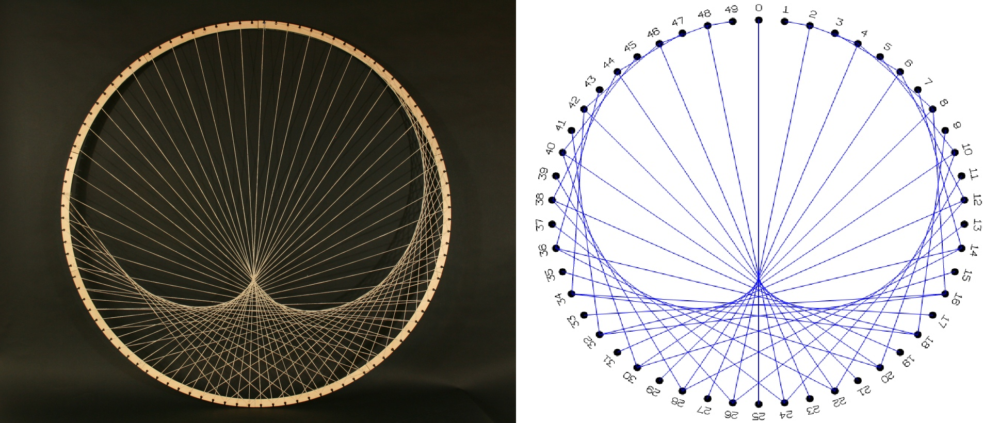

Αποστολή
Στη ιστοεξερεύνηση αυτή θα εργαστείτε ομαδικά και θα πραγματοποιήσετε μια σύντομη παρουσίαση. Αφού χωριστείτε σε δύο ομάδες, θα κληθείτε να μελετήσετε κάποιες πηγές στο internet με σκοπό να απαντήσετε σε συγκεκριμένα ερωτήματα, όπως τι ακριβώς εννούμε με τον όρο "String Art", και ποια ειναι τα δύο βασικά μοτίβο που ακολουθούνται για τον σχεδιασμό τέχνης με νύματα. Θα κληθείτε επίσης να παραδώσετε μία παρουσίαση των ευρημάτων σας στην τάξη. Τέλος, θα ακολουθήσει ενα σύντομο quiz για να δοκιμαστούν οι γνώσεις σας.
Ερευνητές (1η Ομάδα): Τα παιδιά που ανήκουν στην ομάδα αυτή, θα υποδυθούν το ρόλο των ερευνητών του Διαδικτύου.
Ο ρόλος τους περιλαμβάνει τον εντοπισμό, την καταγραφή και την αναφορά ενδιαφέρον φωτογραφιών σχοιμάτων και μοτίβων της τέχνης με κλοστές.
Αρχιτέκτονες (2η Ομάδα): Τα παιδιά που ανήκουν στην ομάδα αυτή, θα υποδυθούν τον ρόλο των αρχικτεκτόνων.
Στόχος τους ειναι να σχεδιάσουν μια πολυμεσική παρουσίαση με τα ευρήματων των ερευνητών.